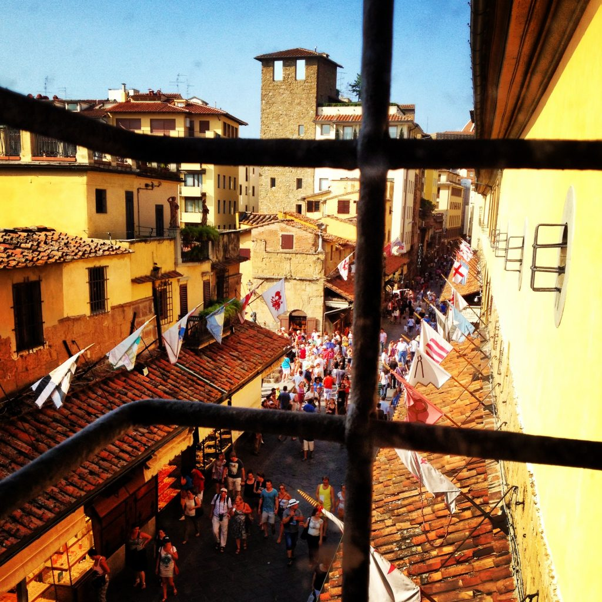

Photo by Francesca Tosolini
Did you know that the American Consulate of Florence has put together a list of English-speaking practitioners and medical facilities located in Florence and nearby towns in Tuscany? You can also contact this hospital, which has English speaking practitioners: The Medical Service in Via Roma, 4 in Florence (055 475411). Hopefully you won't need it though! {This is an excerpt from chapter 8 “Hospitals and pharmacies” of the eBook “Italy from the Inside. A native Italian reveals the secrets of traveling in Italy”}